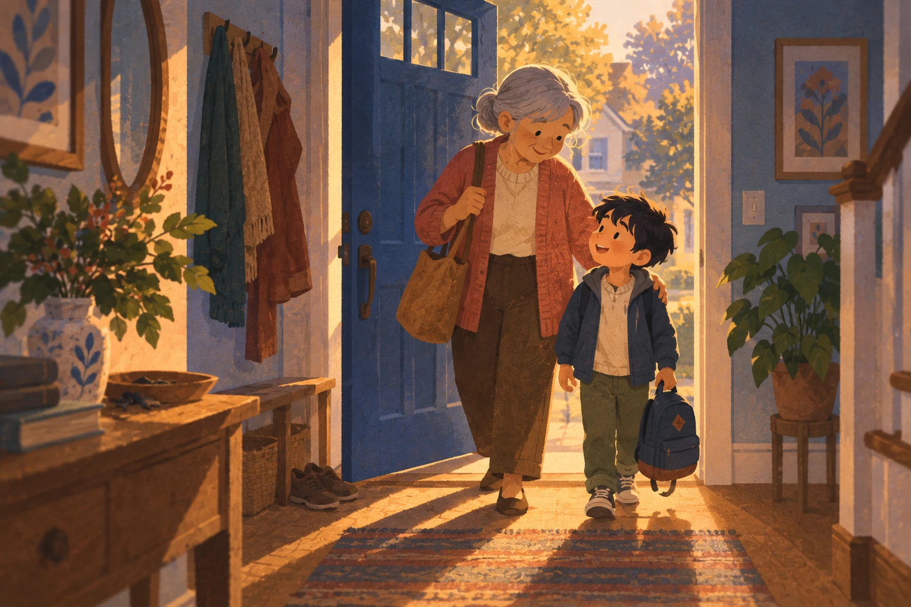
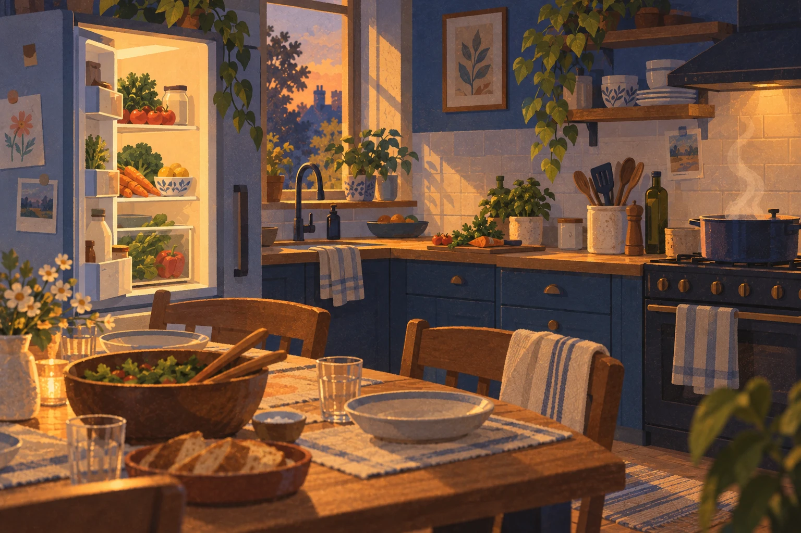
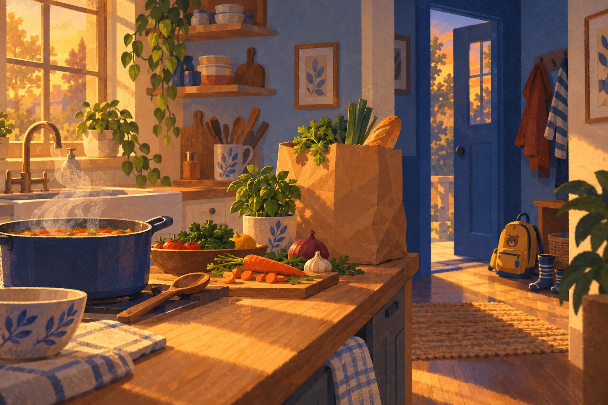

FAMILYSYNCCare Request
Pickup request for Leo
Leo is throwing up at school. Can you pick him up now?
Service design · Northwestern EDI with JPMorgan Chase · Winter 2026
An agent that coordinates a family when a child's day changes. It does the legwork. A person approves every handoff.
11:00 Wednesday
Receiving Communication
from School Agent
Notify Stacy
Leo is throwing up at school. Can you pick him up now?
Leo is throwing up at school. Can you pick him up now?
01 · Context
Leo is sick and someone has to get him. The request is one notification. The coordination behind it is six questions at once.
The window closes at 11:03. FamilySync doesn't wait for Stacy to find the time. It queues what she was carrying and starts on the first one.
02 · Research
Interviews with caregivers about recent child-health emergencies. Two findings set the rules for everything after.
People want an agent that feels caring and proactive, but still keeps them in control.
The line between helpful and creepy is clarity, permission, and user approval.
03 · Synthesis
1Stacy FamilySync
Stacy's window closed, so the agent searches calendars and contacts secondary caregivers. Interrupt stays on screen.
11:03
Search calendars
Leo is throwing up at school. Can you pick him up now?
2FamilySync Cynthia
Leo's grandmother gets the request through the family's trusted circle and accepts with one slide.
Pickup request for Leo accepted
3Cynthia Stacy and Robert
Both parents are updated automatically. Caregivers may be absent, but they still want to feel present.
Robert and Stacy have been updated.
The tension
Automation can create checking work.
If a parent has to verify everything the agent did, it has handed them a second job. So each handoff ends in one clear ask that a person answers.
04 · Exploration
3 directions
2 concepts
1 service
FamilySyncOne coordinator that carries a single event from the school's alert to dinner.
05 · My part
This segment is mine. Two of Stacy's questions are still open: dinner, and what's in the fridge.
It spawns a sub-agent for them.
The sub-agent finds a soup recipe.
It turns the recipe into an Instacart cart.
Then it stops and asks Stacy, with three ways out.


I have found a soup recipe for Leo and created an Instacart ingredient list. Would you like to review the recipe?
06 · Testing
After testing feedback, payment became one integrated step: what it's for, how it's paid, and Stacy's answer, together.
Waiting on you
FamilySync does not pay without a person.
07 · Outcome
From the school's alert to dinner, in one thread. The agent did the legwork; a person answered at every handoff.

A Wednesday, in seven stages
StacyIn an important meeting
Who should I call first?
FamilySyncReceives the school’s alert
StacyCannot answer in the response window
I’m running out of time!
FamilySyncSends a care request; waits three minutes
StacyCan interrupt the search
Who will be available?
FamilySyncChecks calendars for a secondary caregiver
StacyIs notified that Cynthia is picking up Leo
Caregivers may be absent, but they still want to feel present.
FamilySyncContacts Cynthia; she accepts
StacyReceives the pickup update
Visibility helps them stay connected to care.
FamilySyncUpdates Robert and Stacy
StacyLearns Cynthia is home with Leo
How am I going to plan dinner and take care of Leo?
FamilySyncSends both parents a live update
StacyReviews the cart; confirms or declines payment
Confirm order · Manage cart · Decline task
FamilySyncFinds soup, creates a cart and asks Stacy
Who should I call first? Who will be available?Calendars searched, Cynthia contacted
But I’m in the middle of an important meeting...The window closed and the agent escalated
When should I let Robert know? He will be worried!Robert and Stacy updated automatically
I’m running out of time! I need to figure this out!Leo picked up, location updated
How am I going to plan dinner and take care of Leo?Sub-agent found a soup recipe
Is there any food left in the fridge?Cart created, waiting on a yes
Humans approve every handoff. Accept, interrupt, manage, decline and confirm are always a person's call.
It never makes clinical decisions. FamilySync moves logistics: who, when, where, and what's for dinner.